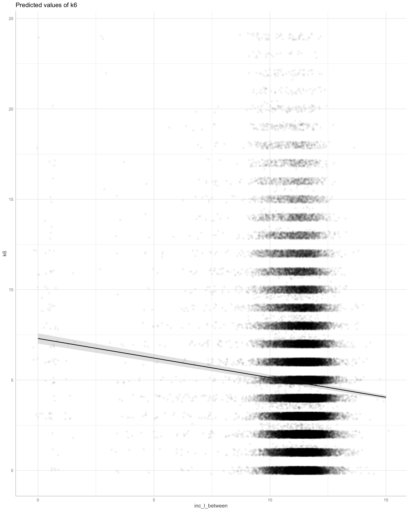
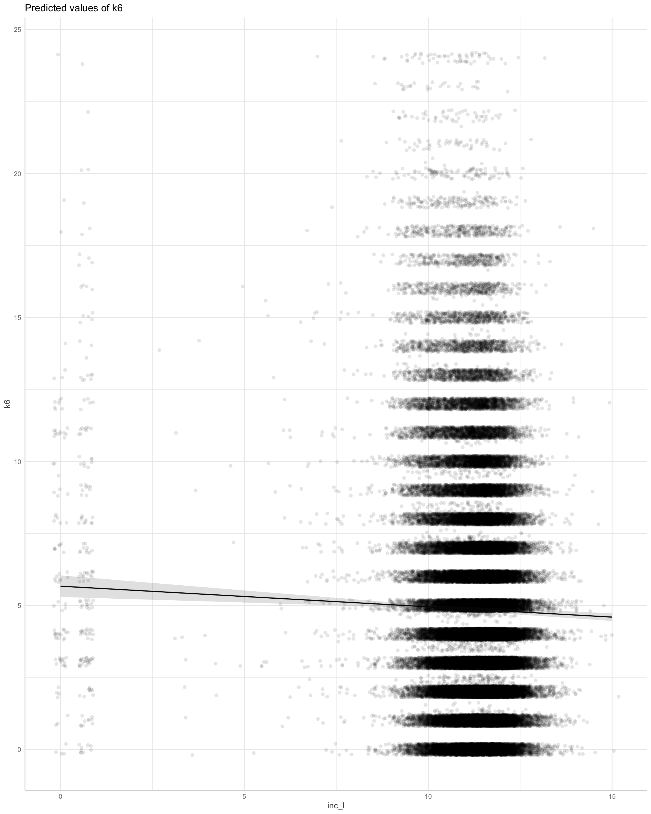
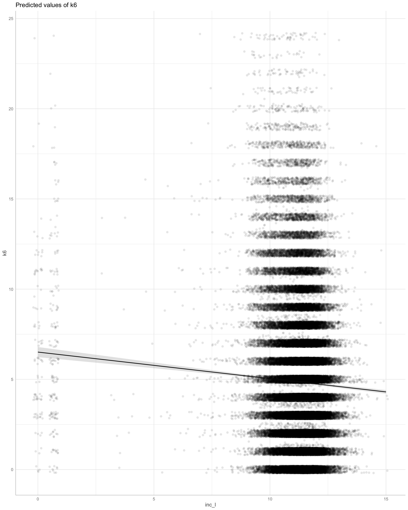
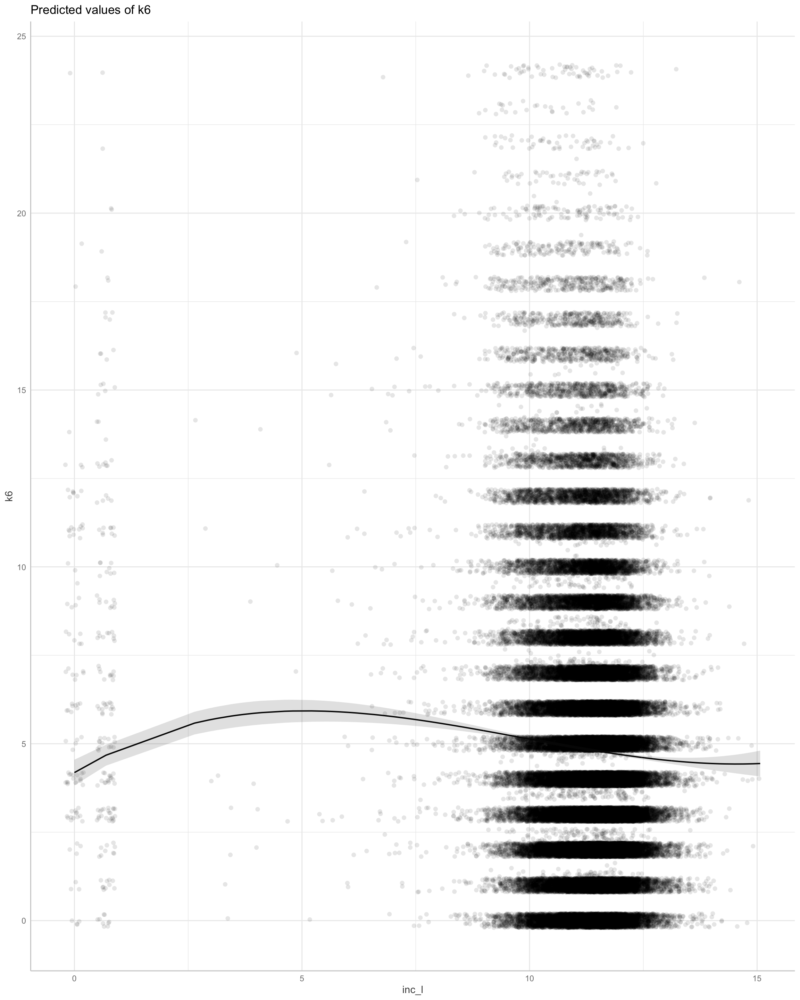
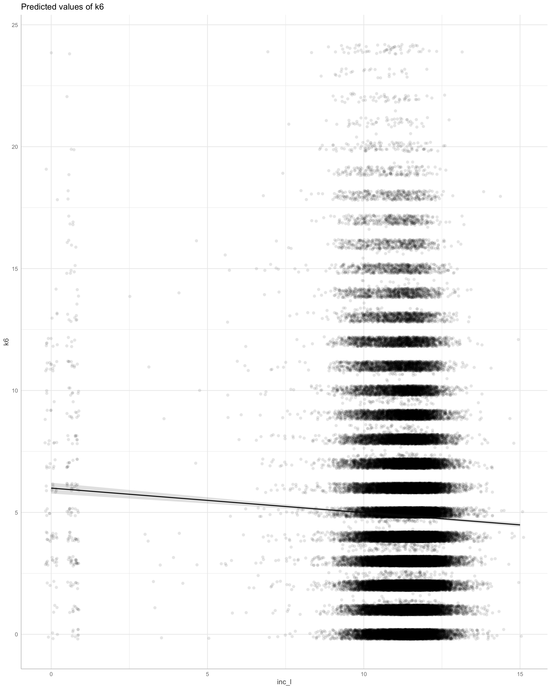

Does money make people happy?
# comparative analysis
# prepare data
# note, still need to do IPW and multiply impute missing data
dt <- df %>%
dplyr::filter(YearMeasured == 1) %>%
dplyr::filter(Wave != 2009) %>% # no k6 measure
dplyr::filter(!is.na(KESSLER6sum), !is.na(Household.INC),!is.na(EthnicCats),!is.na(Male),!is.na(Urban), !is.na(Employed)) %>%
dplyr::select(
Id,
Household.INC,
KESSLER6sum,
NZdep,
Wave,
TSCORE,
Age,
Religion.Prayer,
Religion.Scripture,
Religion.Church,
Male,
Edu,
EthnicCats,
Urban,
Wave,
Employed,
Partner
) %>%
dplyr::mutate(
k6 = as.numeric(KESSLER6sum),
age = (Age),
inc_l = log(Household.INC + 1),
emp = as.numeric(Employed),
age_c = scale(Age, scale = F),
# pray_l = log(Religion.Prayer + 1),
# script_l = log(Religion.Scripture + 1),
church_l = log(Religion.Church + 1),
edu = as.numeric(Edu),
partner = as.numeric(Partner),
male = as.factor(Male),
eth = EthnicCats,
nzdep = as.numeric(NZdep),
urban = Urban
) %>%
dplyr::group_by(Id) %>% filter(n() > 2) %>%
dplyr::mutate(across(
c(
age_c,
male,
eth,
emp,
urban,
k6,
inc_l,
edu,
church_l,
nzdep,
partner
),
list(lag = lag)
)) %>%
dplyr::mutate(k6_lag = as.numeric(k6_lag),
inc_l_lag = as.numeric(inc_l_lag),
church_l_lag = as.numeric(church_l_lag) ) %>%
dplyr::ungroup(Id) %>%
dplyr::filter(!is.na(k6_lag),
!is.na(inc_l_lag),
!is.na(urban_lag),
!is.na(emp_lag),
!is.na(nzdep),
!is.na(partner_lag))%>%
arrange(Wave,Id)
#)%>% # lots of missingness on edu, so might leave this out
# dplyr::mutate(across(c(male_lag, age_s_lag, eth_lag, urban_lag, # lage 2
# church_l_lag), list(lag = lag))) %>%
# dplyr::mutate(k6_s_lag = as.numeric(inc_l_lag),
# inc_s_lag = as.numeric(inc_s_lag) )%>% # lots of missingness on edu, so might leave this out or better multiply impute
# cound id's
#length(unique(dt$Id))
# demean data to obtain within/between individual predictors
# we'll be looking at church attendance and scripture reading in other work
# see https://easystats.github.io/datawizard/articles/demean.html
# we want to deal with *Heterogeneity bias *
dt <- cbind(dt,
demean(
dt,
select = c("inc_l",
"k6",
"age",
"church_l"),
group = "Id"
)) %>%
mutate(
age_between_c = scale(age_between, scale = FALSE),
inc_l_between_c = scale(inc_l_between, scale = FALSE)
)
# ip weights
dt_weights_1 <- ipw::ipwtm(
exposure = k6,
family = "gaussian",
type = "all",
corstr = "ar1",
id = "Id",
timevar = "Wave",
numerator = ~ k6_lag + inc_l_between + age_within + age_between_c +
male + emp + eth + emp_lag + nzdep + partner_lag + urban_lag,
denominator = ~ k6_lag + inc_l_within + inc_l_between + age_within + age_between_c +
male + emp + eth + emp_lag + nzdep + partner_lag + urban_lag ,
data = as.data.frame(dt)
)
df_weights_use_1 <- dt %>%
mutate(ipw = dt_weights_1$ipw.weights)
# possion because k6 behaves as a rate parameter. but takes too long to run for this simple demonstration
m1 <-
lmer(
k6 ~ k6_lag + inc_l_within + inc_l_between + age_within + age_between_c +
male + eth + emp_lag + partner_lag + nzdep_lag + urban_lag + (1 | Id),
weights = df_weights_use_1$ipw,
data = df_weights_use_1
# family = "poisson"
)
parameters::model_parameters(m1) %>%
print_html()
| Model Summary | |||||
|---|---|---|---|---|---|
| Parameter | Coefficient | SE | 95% CI | t(87212) | p |
| Fixed Effects | |||||
| (Intercept) | 4.15 | 0.14 | (3.88, 4.43) | 29.58 | < .001 |
| k6 lag | 0.67 | 2.53e-03 | (0.66, 0.67) | 263.65 | < .001 |
| inc l within | -0.03 | 0.02 | (-0.07, 6.83e-03) | -1.60 | 0.110 |
| inc l between | -0.22 | 0.01 | (-0.24, -0.19) | -17.02 | < .001 |
| age within | 0.02 | 4.95e-03 | (9.82e-03, 0.03) | 3.94 | < .001 |
| age between c | -0.03 | 7.65e-04 | (-0.03, -0.02) | -34.61 | < .001 |
| male (Male) | 0.01 | 0.02 | (-0.03, 0.05) | 0.55 | 0.583 |
| eth (Maori) | -1.25e-03 | 0.03 | (-0.06, 0.06) | -0.04 | 0.965 |
| eth (Pacific) | 0.05 | 0.06 | (-0.07, 0.17) | 0.84 | 0.399 |
| eth (Asian) | 0.09 | 0.05 | (-0.01, 0.19) | 1.72 | 0.085 |
| emp lag | -0.11 | 0.02 | (-0.15, -0.06) | -4.30 | < .001 |
| partner lag | -0.06 | 0.02 | (-0.10, -0.01) | -2.54 | 0.011 |
| nzdep lag | 0.02 | 3.60e-03 | (0.02, 0.03) | 6.17 | < .001 |
| urban lag (Urban) | 0.07 | 0.02 | (0.03, 0.12) | 3.54 | < .001 |
| Random Effects | |||||
| SD (Intercept: Id) | 0.00 | ||||
| SD (Residual) | 2.72 | ||||
We do not find reliable (or large) within-person effects:
There are between person associations between income and distress, although we do not estimate this as a causal effect.

Here we will used lagged values of the exposure to adjust for confounders and IP weights.
# calculate weights
dt_weights_2 <- ipw::ipwtm(
exposure = k6,
family = "gaussian",
type = "all",
corstr = "ar1",
id = "Id",
timevar = "Wave",
numerator = ~ k6_lag + age_c +
male + eth + emp_lag + nzdep + partner_lag + urban_lag ,
denominator = ~ k6_lag + inc_l_lag + age_c +
male + eth + emp_lag + nzdep + partner_lag + urban_lag,
data = as.data.frame(dt)
)
dt_weights_use_2 <- dt %>%
mutate(ipw = dt_weights_2$ipw.weights)
#
m2 <- geeglm(
k6 ~ k6_lag + inc_l + as.numeric(age_c) +
male + eth + emp_lag + nzdep + partner_lag + urban_lag ,
data = dt_weights_use_2,
id = Id,
weights = ipw,
waves = Wave,
corstr = "ar1",
)
parameters::model_parameters(m2) %>%
print_html()
| Model Summary | |||||
|---|---|---|---|---|---|
| Parameter | Coefficient | SE | 95% CI | Chi2(1) | p |
| (Intercept) | 2.69 | 0.18 | (2.34, 3.05) | 217.41 | < .001 |
| k6 lag | 0.67 | 3.42e-03 | (0.66, 0.68) | 38278.21 | < .001 |
| inc l | -0.07 | 0.02 | (-0.11, -0.04) | 17.59 | < .001 |
| age c | -0.02 | 7.83e-04 | (-0.03, -0.02) | 959.65 | < .001 |
| male (Male) | -3.90e-03 | 0.02 | (-0.04, 0.03) | 0.04 | 0.835 |
| eth (Maori) | 2.57e-03 | 0.03 | (-0.06, 0.06) | 6.76e-03 | 0.934 |
| eth (Pacific) | 0.05 | 0.09 | (-0.13, 0.23) | 0.28 | 0.599 |
| eth (Asian) | 0.10 | 0.06 | (-0.02, 0.22) | 2.64 | 0.104 |
| emp lag | -0.18 | 0.03 | (-0.23, -0.13) | 50.36 | < .001 |
| nzdep | 0.03 | 3.78e-03 | (0.03, 0.04) | 79.57 | < .001 |
| partner lag | -0.14 | 0.03 | (-0.19, -0.09) | 29.29 | < .001 |
| urban lag (Urban) | 0.07 | 0.02 | (0.03, 0.11) | 10.88 | < .001 |

Causal effect
We find income very strongly related to Kessler 6 distress!
m2_no_weights <- geeglm(
k6 ~ k6_lag + inc_l + as.numeric(age_c) +
male + eth + emp_lag + nzdep + partner_lag + urban_lag ,
data = dt_weights_use_2,
id = Id,
waves = Wave,
corstr = "ar1",
)
parameters::model_parameters(m2_no_weights) %>%
print_html()
| Model Summary | |||||
|---|---|---|---|---|---|
| Parameter | Coefficient | SE | 95% CI | Chi2(1) | p |
| (Intercept) | 3.44 | 0.14 | (3.17, 3.72) | 599.25 | < .001 |
| k6 lag | 0.67 | 3.30e-03 | (0.66, 0.68) | 41234.93 | < .001 |
| inc l | -0.15 | 0.01 | (-0.17, -0.12) | 134.23 | < .001 |
| age c | -0.02 | 7.75e-04 | (-0.03, -0.02) | 1030.50 | < .001 |
| male (Male) | 3.07e-03 | 0.02 | (-0.03, 0.04) | 0.03 | 0.869 |
| eth (Maori) | 5.55e-03 | 0.03 | (-0.05, 0.07) | 0.03 | 0.857 |
| eth (Pacific) | 0.05 | 0.08 | (-0.10, 0.20) | 0.46 | 0.496 |
| eth (Asian) | 0.10 | 0.06 | (-0.02, 0.21) | 2.77 | 0.096 |
| emp lag | -0.14 | 0.02 | (-0.19, -0.09) | 30.09 | < .001 |
| nzdep | 0.03 | 3.57e-03 | (0.02, 0.04) | 68.17 | < .001 |
| partner lag | -0.09 | 0.02 | (-0.14, -0.05) | 14.83 | < .001 |
| urban lag (Urban) | 0.09 | 0.02 | (0.05, 0.13) | 17.85 | < .001 |

Without IP weights the model estimates a stronger causal effect!
This suggests the importance of specifying correct IP weights.
This recovers the same estimate
library(gamm4)
library(splines)
m2_lmer <- lmer(
k6 ~ k6_lag + bs(inc_l) + as.numeric(age_c) +
male + eth + emp_lag + nzdep + urban_lag + (1|Id),
data = dt_weights_use_2,
weights = dt_weights_use_2$ipw
)
parameters::model_parameters(m2_lmer) %>%
print_html()
| Model Summary | |||||
|---|---|---|---|---|---|
| Parameter | Coefficient | SE | 95% CI | t(91201) | p |
| Fixed Effects | |||||
| (Intercept) | 1.14 | 0.19 | (0.76, 1.51) | 5.94 | < .001 |
| k6 lag | 0.65 | 2.52e-03 | (0.65, 0.66) | 257.58 | < .001 |
| inc l (1st degree) | 3.91 | 0.64 | (2.67, 5.16) | 6.16 | < .001 |
| inc l (2nd degree) | -0.02 | 0.35 | (-0.71, 0.67) | -0.06 | 0.956 |
| inc l (3rd degree) | 0.26 | 0.29 | (-0.32, 0.83) | 0.87 | 0.382 |
| age c | -0.03 | 7.65e-04 | (-0.03, -0.03) | -35.26 | < .001 |
| male (Male) | 1.23e-03 | 0.02 | (-0.04, 0.04) | 0.06 | 0.950 |
| eth (Maori) | 3.49e-03 | 0.03 | (-0.05, 0.06) | 0.12 | 0.905 |
| eth (Pacific) | 0.07 | 0.06 | (-0.05, 0.19) | 1.13 | 0.258 |
| eth (Asian) | 0.10 | 0.05 | (2.42e-03, 0.20) | 2.01 | 0.045 |
| emp lag | -0.13 | 0.02 | (-0.18, -0.08) | -5.29 | < .001 |
| nzdep | 0.03 | 3.63e-03 | (0.02, 0.04) | 8.20 | < .001 |
| urban lag (Urban) | 0.10 | 0.02 | (0.06, 0.14) | 4.86 | < .001 |
| Random Effects | |||||
| SD (Intercept: Id) | 0.36 | ||||
| SD (Residual) | 2.70 | ||||

This reveals the possible problems in the distribution of values across the sample. Although pretheoretically we would expect the effect to be linear.
m2_lmer2 <- lmer(
k6 ~ k6_lag + inc_l + as.numeric(age_c) +
male + eth + nzdep + partner_lag + urban_lag + (1|Id),
data = dt_weights_use_2,
weights = dt_weights_use_2$ipw
)
parameters::model_parameters(m2_lmer2) %>%
print_html()
| Model Summary | |||||
|---|---|---|---|---|---|
| Parameter | Coefficient | SE | 95% CI | t(91203) | p |
| Fixed Effects | |||||
| (Intercept) | 2.76 | 0.12 | (2.53, 2.99) | 23.43 | < .001 |
| k6 lag | 0.66 | 2.51e-03 | (0.65, 0.66) | 261.37 | < .001 |
| inc l | -0.10 | 0.01 | (-0.12, -0.08) | -9.95 | < .001 |
| age c | -0.02 | 7.24e-04 | (-0.03, -0.02) | -32.63 | < .001 |
| male (Male) | -0.01 | 0.02 | (-0.05, 0.02) | -0.72 | 0.474 |
| eth (Maori) | 5.38e-03 | 0.03 | (-0.05, 0.06) | 0.18 | 0.853 |
| eth (Pacific) | 0.06 | 0.06 | (-0.06, 0.18) | 0.98 | 0.325 |
| eth (Asian) | 0.11 | 0.05 | (0.01, 0.21) | 2.20 | 0.028 |
| nzdep | 0.03 | 3.58e-03 | (0.03, 0.04) | 9.70 | < .001 |
| partner lag | -0.14 | 0.02 | (-0.19, -0.10) | -6.21 | < .001 |
| urban lag (Urban) | 0.07 | 0.02 | (0.03, 0.11) | 3.54 | < .001 |
| Random Effects | |||||
| SD (Intercept: Id) | 0.32 | ||||
| SD (Residual) | 2.71 | ||||

Here we find support for a linear relationship which is slightly stronger than the GEE estimate (with weights)
The question arises, which model to prefer? I think probably GEE.
Key points:
If you see mistakes or want to suggest changes, please create an issue on the source repository.
Text and figures are licensed under Creative Commons Attribution CC BY-NC-SA 4.0. Source code is available at https://github.com/go-bayes/reports, unless otherwise noted. The figures that have been reused from other sources don't fall under this license and can be recognized by a note in their caption: "Figure from ...".
For attribution, please cite this work as
Bulbulia (2021, Dec. 2). Reports: Does income affect psychological distress?. Retrieved from https://go-bayes.github.io/reports/posts/k6-income/
BibTeX citation
@misc{bulbulia2021does,
author = {Bulbulia, Joseph},
title = {Reports: Does income affect psychological distress?},
url = {https://go-bayes.github.io/reports/posts/k6-income/},
year = {2021}
}